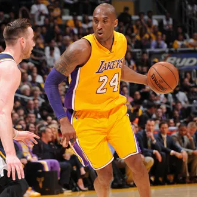
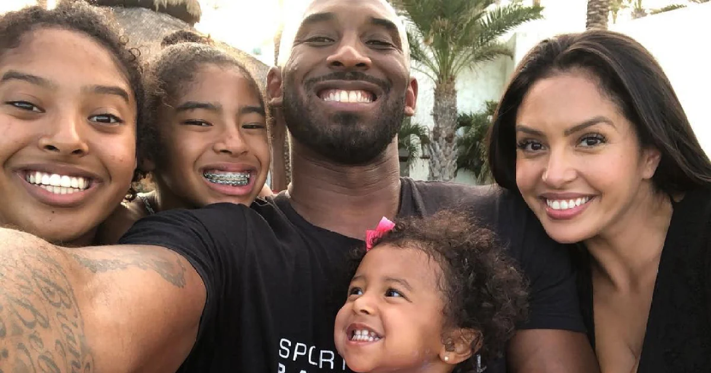
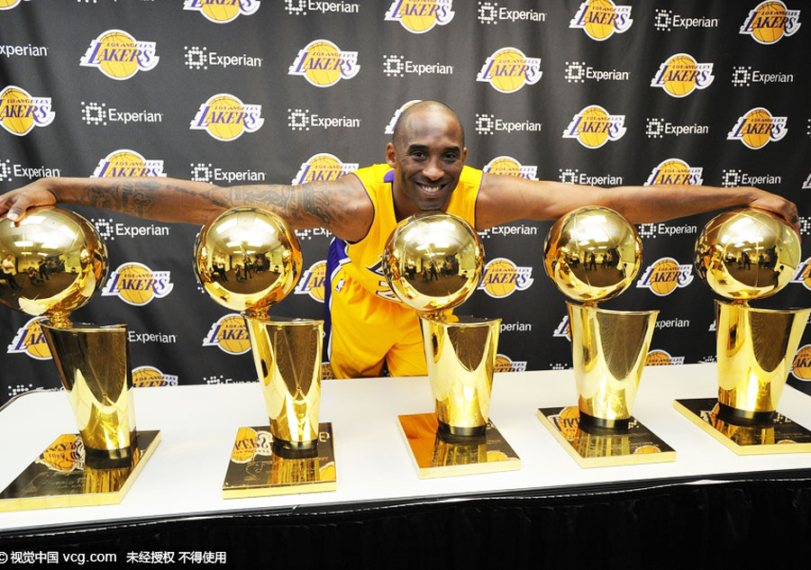

Introduction
Kobe Bryant was a professional basketball player who played for the Los Angeles Lakers for 20 years. He was widely regarded as one of the greatest basketball players of all time and had a profound impact on the sport and the world.
Early Life
Kobe Bryant was born in Philadelphia, Pennsylvania in 1978. He was the youngest of three children and grew up in a family with a deep love for basketball. His father, Joe "Jellybean" Bryant, was a professional basketball player and inspired Kobe to pursue the sport at a young age.
High School and Early Career
Kobe Bryant attended Lower Merion High School in Pennsylvania, where he was a star basketball player. He was named the state's player of the year in 1996 and was heavily recruited by colleges and universities across the country. He decided to skip college and instead entered the NBA directly, being selected by the Charlotte Hornets with the 13th overall pick in the 1996 draft. He was immediately traded to the Los Angeles Lakers, where he would spend the rest of his career.
NBA Career
Kobe Bryant spent 20 years in the NBA, all with the Los Angeles Lakers. During this time, he became one of the greatest basketball players of all time, earning numerous awards and accolades. He was a five-time NBA champion, a two-time Olympic gold medalist, and was named to the All-Star team 18 times. He also held numerous records, including the third-most points scored in a single game, and the fourth-most points scored in a career.
Legacy
Kobe Bryant's impact on the world of basketball and beyond was immense. He inspired countless people with his work ethic, competitiveness, and passion for the sport. He also used his platform to give back to the community and made a positive impact on people's lives through his charitable work. Kobe will always be remembered as a true legend of the game and his legacy will continue to live on.
Final Thoughts
Kobe Bryant's sudden passing in 2020 was a shock to the world and a great loss to the sport of basketball. However, his impact on the game and on the world will never be forgotten. This tribute page is dedicated to remembering Kobe's life, career, and legacy. May he rest in peace.
Gallery
- 
- 
- 